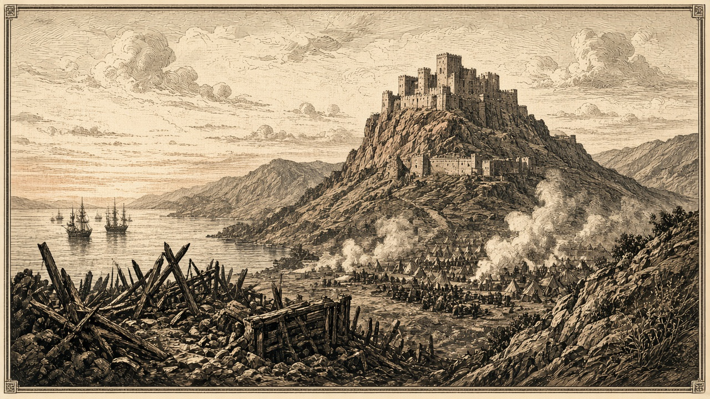

なのです艦隊が紅峰の首都を砲撃 大都市四百人が犠牲 部隊は全滅
兵站（40,57）が陥ち予備兵千人が投降 軍港（39,55）に累計二発命中 首都ローテンホルンはなお紅峰領

【総合部】第186期、なのです主義人民共和国の艦隊が紅峰公国の首都ローテンホルン（41,52）に砲撃を集中させた。大都市の人口は四千二百人から三千八百人へ減り、四百人が犠牲になった。首都の部隊（41,52）は全滅し、軍港（39,55）には累計二発が命中した。兵站基地（40,57）も陥落し、守備の予備兵千人が投降した。首都ローテンホルン自体はなお紅峰の手に残る。詳報は3面。
今期の公報損害は紅峰千九百人、なのです四百人。累計は紅峰八万二千四百人、なのです五万五百人。紅峰の人口は五万千六百人、兵力は二万二千六百人で、首都に置かれていた部隊は今期全滅した。
銀嶺の村（78,28）がチェスに落ちる 首都の隣
銀嶺侯国の村（78,28）がチェス＝シロバキア共和国に占領された。首都モンタルジェント（77,28）の東隣にある村で、両者の間に遮るものはなくなった。今期の損害は銀嶺三千三百人、チェス二百人。累計は銀嶺五万四千五百人、チェス一万五千百人。詳報は4面。
テキスタンから教団へ 四万六千七百人
テキスタン共和国から狐っ娘の尻尾教団へ、仕事を求める四万六千七百人が移り住んだ。教団は受け入れた。テキスタンの人口は二十七万九千九百人になった。詳報は2面。